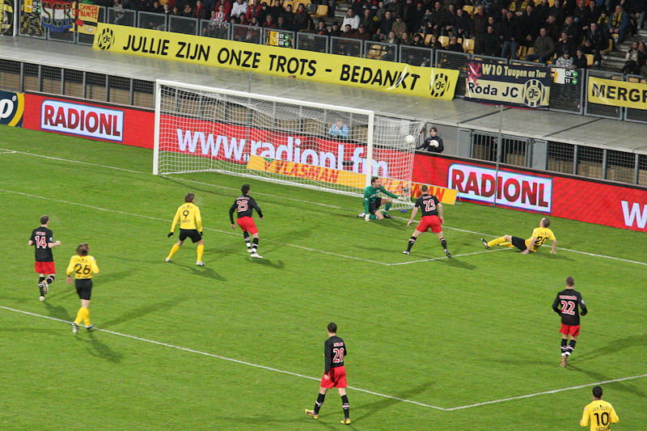
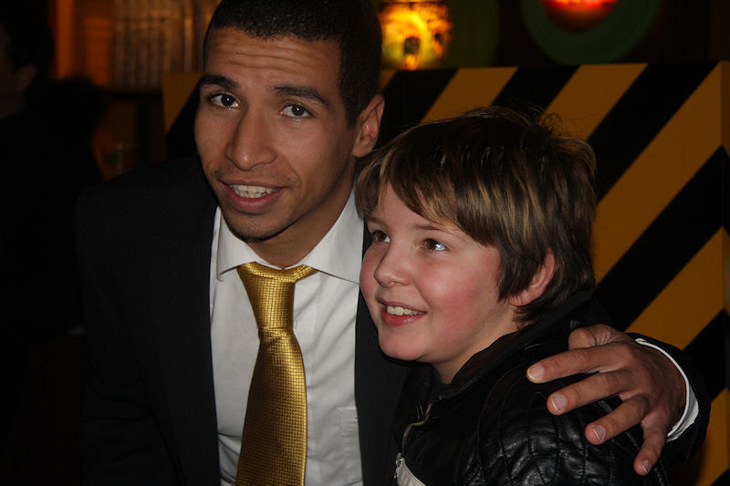

Doelman Isaksson redt op een inzet van Saeijs.
Koevermans kopt in het zijnet.
Schitterende voorzet van Delorge wordt door drie spelers op rij gemist.
Janssen tikt net naast. De bal schampt de paal.
In de slotseconde van de verlenging eerste helft kan Koevermans
binnenschieten nadat Castro een houdbare bal wegstompte, 0-1, (46').
Collega Isaksson verricht beter werk en maakt daarmee het grote verschil
tussen beide ploegen.
Bakkal schiet voorlangs een leeg doel.
Beide ploegen ontlopen elkaar niet noemenswaardig hoewel PSV met de handrem
op lijkt te spelen. De slotfase biedt Roda een aantal
goede kansen.
PSV komt regelmatig met de schrik vrij.

De laatste tien minuten blijft Philips overeind met tijdrekken.
Braamhaar vindt het best.

Weer een belangrijke redding van Isaksson.
Blije Brabo's want zij staan nu op de eerste plaats.
Het voetbal gaat verder in de omloop.
De Kickoff is zompig en rokerig. Maar er zijn nog genoeg vrolijke gasten.
Het voordeel van verlies...

Hadouir.
Tyton. Verder waren Staelens en Urdinov aanwezig in de Kickoff.